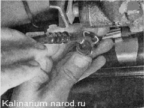
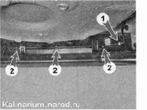
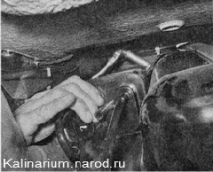
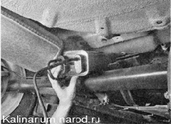
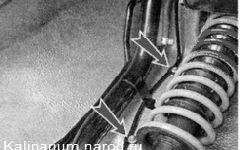
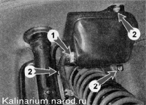

Система улавливания паров топлива - снятие и установкаСистема улавливания паров топлива состоит из адсорбера, сепаратора, клапана продувки адсорбера и гравитационного клапана. Гравитационный клапан установлен в сепараторе сверху. Адсорбер установлен на топливном баке, но его можно снять, не снимая топливный бака. Для выполнения работы потребуется смотровая канава или эстакада. Снятие 1. Подготавливаем автомобиль к выполнению работы. 2. Снимаем защитный экран топливного бака и .... ..разъединяем трубку продувки адсорбера. 3. Отсоединяем наконечник трубки сепаратора 1 от трубки адсорбера и отсоединяем трубку адсорбера от пружинных фиксаторов 2. 
4. Торцовым ключом на 10 мм с трещоткой отворачиваем гайку хомута крепления адсорбера к топливному баку.   6. Снимаем заднее правое колесо . Обрабатываем проникающей смазкой гайки крепления сепаратора и его трубок. 7. Торцовым ключом на 10 мм отворачиваем две гайки крепления трубки сепаратора к арке кузова. Снимаем держатели трубок со шпилек. 
8. Аналогично отсоединяем трубку сепаратора от заднего лонжерона кузова. 9. Крестовой отверткой ослабляем затяжку хомута 1 и снимаем шланг крепления с патрубка сепаратора. Торцовым ключом на 10 мм отворачиваем три гайки крепления сепаратора к кузову. 10. Снимаем сепаратор с автомобиля. При необходимости поддев отверткой, отсоединяем от него гравитационный клапан. Установка Устанавливаем адсорбер и сепаратор в обратной последовательности. |